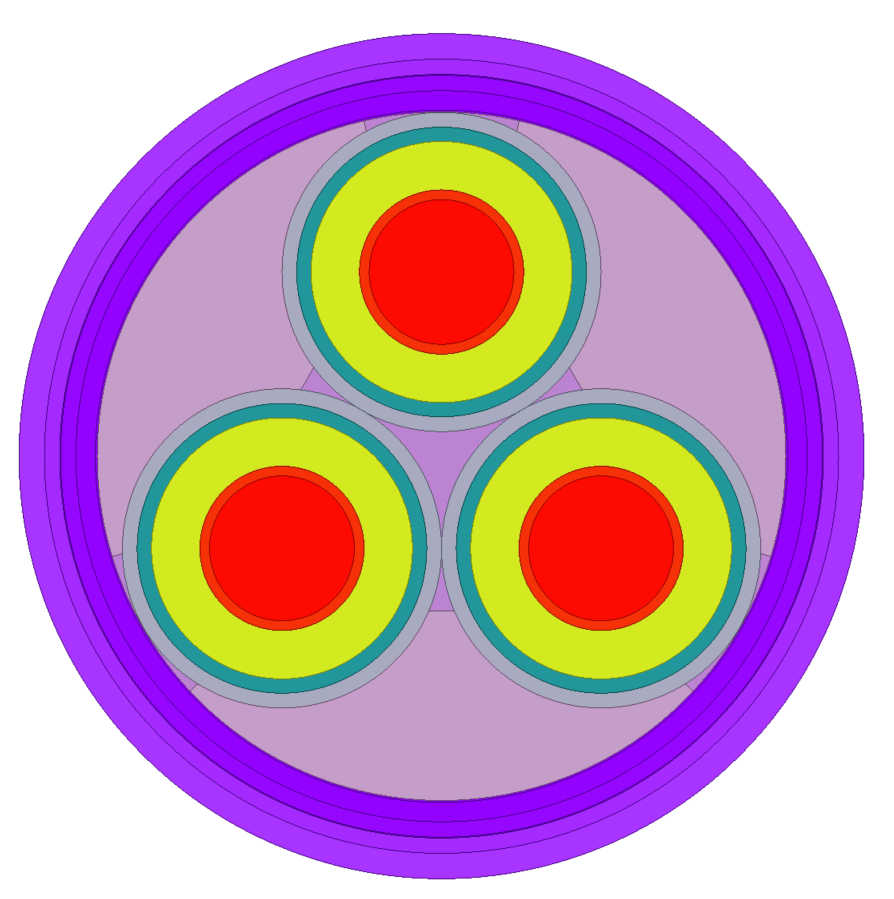

General#
These examples use PyAEDT to show some general applications.

This example shows how to use PyAEDT to enable a control program in a Maxwell 2D project.

This example uses PyAEDT to set up a resistance calculation and solve it using the Maxwell 2D DCConduction solver.

This example shows how to leverage PyAEDT to assign a matrix and perform series or parallel connections in a Maxwell 2D design.

This example shows how to use PyAEDT to create a Maxwell 2D electrostatic analysis.

This example shows how to create an external delta circuit and connect it with a Maxwell 2D design.

This example shows how to use PyAEDT to create a Maxwell DC analysis, compute mass center, and move coordinate systems.

This example shows how to leverage PyAEDT to set up a Maxwell 3D transient analysis and then compute the average value of the current density field over a specific coil surface and the magnitude of the current density field over all coil surfaces at each time step of the transient analysis.

Twin builder examples.

This example uses PyAEDT to create a 3-phase cable with neutral and solve it using Maxwell 2D AC Magnetic (Eddy Current) solver.

This example uses PyAEDT to create a 2D electrostatic model of twisted conductor pair for stator windings and showcases how to perform an automated inception voltage evaluation for the the nominal setup and a parametric analysis.
{kind=link}

This example uses PyAEDT to create a 2D model of subsea power cable construction for floating offshore applications. Design variables and material properties are imported from a json configuration file.